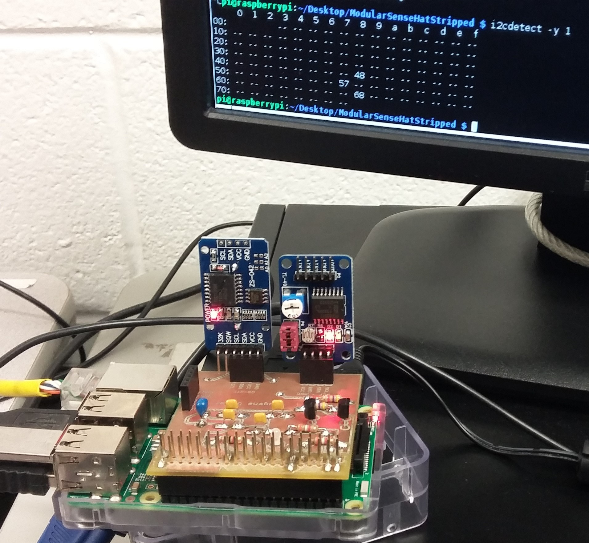
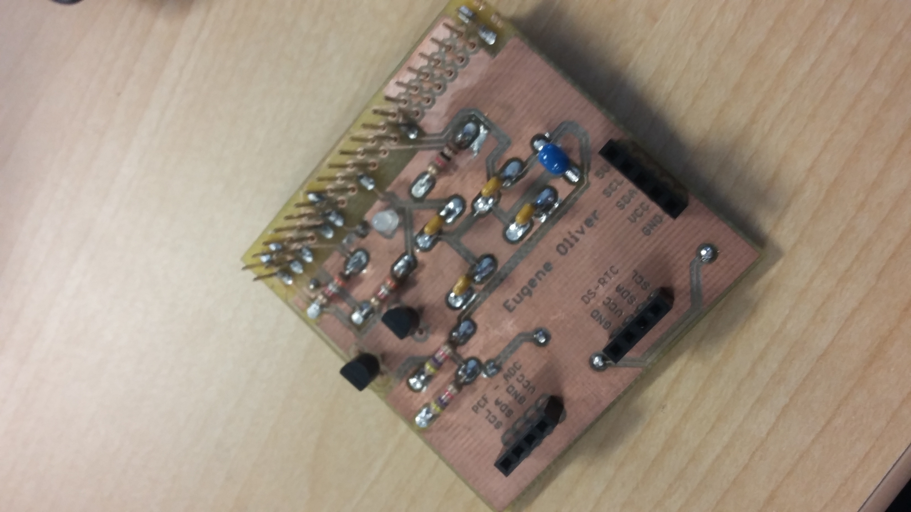
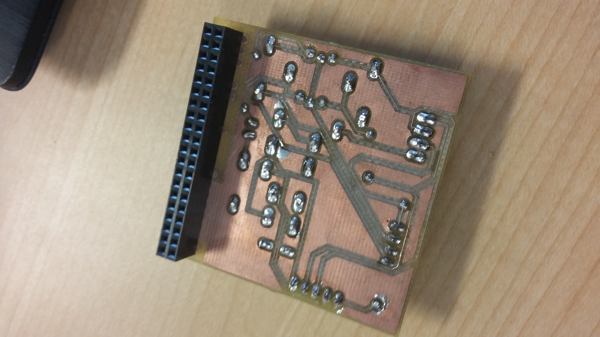
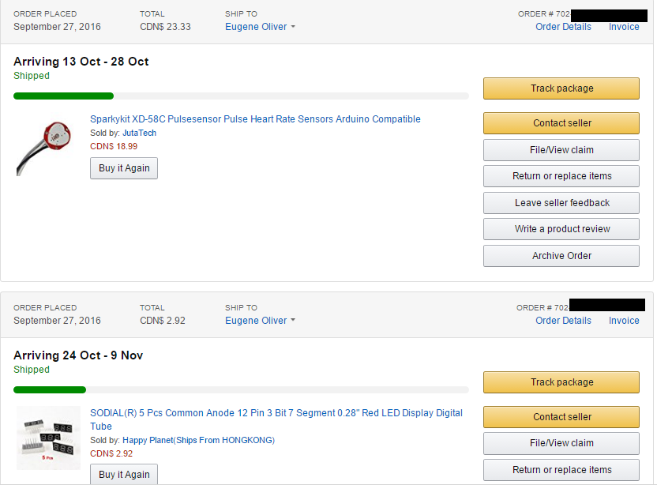
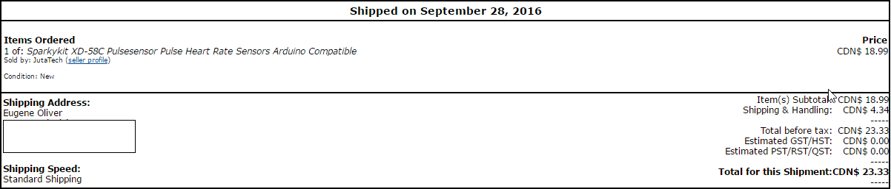

This week I updated my progress report once again(which is seen below).
Progress Report(15/11/2016):
As of today there has there has been signs of progrssion for the Lifelines: Breathalyzer.
This past Saturday was the Humber Open House where we presented our projects so far and
got feedback and some reactions from families and possible future Humber students. I also
got to see other projects of my classmates and see where they are currently at with their
projects as well. I received helpful feedback from other groups and Kristian that I will
talk about in a future report. A lot of guests that came to the open house were happy to see
that the project was working and that the sensors were cool to interact with.
So far, everything has been going smoothly. At open house I was able to demonstrate what I planned to
show, and that was calibrating my heartbeat sensor and MQ-3 alcoholic gas sensor and getting successful
readings from both of them. I also didn't need to bring a monitor and use the HDMI-to-VGA converter because
I was able to display my raspberry pi onto my laptop screen instead. This saves me a lot of hassle by not
needing to pull wires out of a computer monitor in classes or at home.
One problem that I encountered this past week was on how I was going to demonstrate getting readings from my
alcohol sensor, considering that I wouldn't need to use an intoxicated person. I solved this problem by just
using a rubbing alcohol bottle, but this could've been further fixed by using just a hand sanitizer bottle.
By using a hand sanitizer bottle instead, it wouldn't be a big problem if a spill were to happen. Another
problem I encountered was when I was first trying to get readings from the sensors. As stated in my last report
I was only getting 0's and 1's and that was fixed by using the ADC in one of the sensors that was given
with our PCB kit from the earlier weeks.
In terms of moving forward, I plan to create an acrylic case that will hold the project. I also plan to further
calibrate the sensors to get more accurate readings, and try to get a graph that displays the data rather than
just numbers. All parts have been received so I will not need to put anymore money into the project which ends the
finances at around $63.
Week 10
By this week I updated my progress report that states all the things we have gone through from my last progress report until now(which is seen below).
Progress Report:
As of today there has been some updates and steps moving forward with the Lifelines: Breathalyzer
hardware project. All parts that I believe are needed for the project have come in, so all building
can be done and started. With the open house coming up this Saturday I plan to have a lot of work on
my hands to make sure that everything I intend to show is working successfully.
In terms of meeting previous objectives and guidelines prior to today, everything has been working
well and in time. Although I was given some issues when booting up and getting the PCB working with
the sensors at first, I was able to consult Vlad and Kelly to see what the problem was when seeing
the data on the screen. It turns out that one of my connections were shorted out because of a small
strip of solder which connected two of my GPIO pins. This fixed the error of my sensors not being
detected with the “i2cdetect –y 1” command. After fixing this problem the light and temperature
sensors were giving proper readings and the LED blink test also worked as well.
The following weeks after the power up some projects were also due. I created the Placard for
the breathalyzer which gives a quick and short description about the project and what we plan to
do and use it for. It also highlights the main specifications and the names of the people who are
working on this project with me. Lastly, I created a quick 30-second video which shows information
on some of the things that were done in the previous weeks. It shows the parts that have came and
arrived in the mail, it also demonstrates a quick light test, then ends off with proof that the
sensors are booting up on the PCB while connected to the Raspberry Pi.
In terms of moving forward, as stated before, I plan to get as much ready for the open house coming
up. I’ve gotten data from my sensors but only on an analog reading which just shows 0’s and 1’s, my
next step would be to get those values to actually show full numeric values so it’s more useful.
Lastly, as time goes on I need to continue preparing for my individual build instructions and
final video filming in the last few weeks.
Week 9
This week we had to create a 30 second video. In my video I highlight a 2 second intro, show what parts have arrived, a short video on the
blink test on the PCB and Raspberry Pi bootup. Lastly I also show the working of the MQ-3 and Heartbeat sensor booting up with the pi, following
with what I plan to demonstrate in Open House.
30-Second Video:
Week 8
This week we had to create and upload a placard for our project. After looking at the specifications for the sensors that we will be using we have
a better understanding of what we will need to be using, power, and design of our project. For now the picture used is just a slight build, and there
is a good chance it will be modified in future weeks of the build.
This week we had to have our PCB working and successfully booted up. Once booted it the sensors should be plugged in
and working after running a program on the Raspberry Pi. All my sensors were successfully working, and my LED also flashed.
There was a problem at first with my PCB, but after going back to the prototype lab and testing again, I was able to get it working.
The problem was with the 24-pin GPIO connector, pins 3 and 5 were actually short circuited by solder. This created an error with the sensors
and when I ran the "i2cdetect -y 1" command, it wouldn't show the sensors being recognized.Once consulting Kelly Gray about it,
he was able to fix it for me while looking under the microscope
PCB working with sensors detected:

Week 6
By this week I updated my progress report that states all the things we have gone through from week 1 until now(which is seen below) and I also just recently completed soldering my PCB board and will go onto testing it.
PCB Soldered:


Progress Report:
As of today there has been several changes to the initial plan of the hardware idea for Lifelines: the Portable Breathalyzer. After meeting
with Kristian Medri about our proposal, we realized that a few things needed to be added and changed. Instead of going with just one sensor
that looks at your alcohol level, my group decided to also add a heart rate sensor that will monitor your heart beat. We also realized that
we needed to include a collaboration. We now are working in collaboration with the HRT (Hospitality, Recreation and Tourism) department
here at Humber college. We will be looking at all the sensors they have at their center and we will also be able to ask them any questions
that we have uncertainties with.
In terms of meeting the objectives based on the approval of our project proposal I am in pretty
good standings. All the materials and parts needed for the project have either arrived in my
possession or are currently on their way. To avoid any time delays and full lab problems, I came
to school during our reading break (Thursday Oct 6th) to work on finishing the PCB and solder all
the things together.
One problem that came up is with one our parts that are coming in. Our 7-segment display that
we planned to include to display the readings will be coming in a month, which will impact the
budget building time. To fix this Kristian Medri suggested to talk to Vlad and Kelly to see what
our other options are while waiting for these parts. In terms of finances, we were able to find
cheap resources to include in our project since we will not be receiving any project funds.
Either than the actual Raspberry Pi kit that we had to purchase and parts kit we bought in
first year, everything else was relatively cheap. My total budget including everything I bought
in the past came up to around $360, but removing the things I already had, I just needed to
spend a total of $63.69.
In terms of moving forward, my group will be able to commence our project building plan.
When looking at my designed GANTT chart, I can see that if I am able to follow my schedule
I will be able to complete it on time. My next step in this project is to go about the procedure
to test the PCB board and make sure nothing is wrong with it. Lastly, as time goes on I plan to
continue documenting any work that has been done, package openings, and assembly that will
eventually make up my build video.
Week 5
By this week we had to have ordered our parts needed for this project. All the parts
that are still on their way need to at least have their proof of purchase.
Proof of purchase for Heartbeat Sensor and 7-segment Display:


Week 4
By this week we needed to hand in our Budget Report in exchange to get our GANTT chart back
The proposal for our project was due this week. Groups were made and my group of myself Adriene and Ryan
(Designated Drivers), plan to create a breathalyzer which we have planned to name "Lifelines: A Portable Breathalyzer"